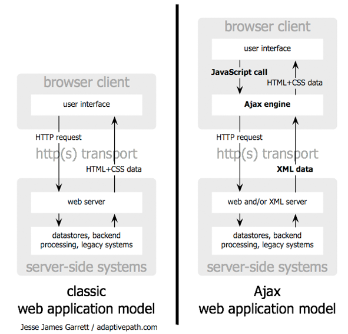

Introducción a JavaServer Faces
Frameworks RIA basados en el servidor
Frente a las aplicaciones web tradicionales basadas en la navegación entre distintas páginas, en los últimos años se han popularizado las aplicaciones web de una única página que intentan simular las aplicaciones de escritorio. Son las denominadas RIA (Rich Internet Applications).
Google fue uno de los primeros promotores de este tipo de aplicaciones, con ejemplos como Google Maps. Esta aplicación web utiliza JavaScript de forma intensiva para interactuar con el mapa o para seleccionar opciones (imprimir, enviar, etc.). Todas estas acciones se realizan en una única página del navegador.

En las aplicaciones tradicionales cada petición al servidor hace que éste genere una nueva página HTML. En la parte izquierda de la siguiente figura se muestra este modelo.

En la parte derecha de la figura vemos el funcionamiento de las aplicaciones RIA. Se siguen realizando peticiones HTTP al servidor, pero no es el navegador quién lo hace directamente, sino funciones JavaScript residentes en la página. Estas funciones envían la petición y los datos al servidor y éste devuelve los datos de respuesta en algún tipo de formato (texto, XML o JSON). Las funciones JavaScript en la página del navegador formatean estos datos y los muestran en pantalla actualizando el árbol de componentes DOM. El servidor no genera una nueva página sino sólo los datos. Este enfoque se ha denominado Ajax (Asynchronous JavaScript and XML).
Existen frameworks JavaScript muy populares, como jQuery, que facilitan la tarea de definir la interfaz de usuario de la aplicación. Aun así, el mantenimiento y testeo de este código se hace complicado. Hay muchos elementos implicados: la comunicación con el servidor, las páginas HTML en las que está embebido y el propio código JavaScript. También se hace complicado reutilizar y compartir el código JavaScript entre distintas páginas y desarrolladores.
Como alternativa a la codificación en JavaScript aparecen los denominados frameworks RIA basados en el servidor, en los que los desarrolladores no escriben directamente JavaScript, sino que utilizan componentes de alto nivel (paneles, menús desplegables, combos, etc.) que el servidor inserta en las páginas resultantes. Este enfoque es el que utilizan frameworks populares como JSF (JavaServer Faces), GWT (Google Web Toolkit) o ZK.
En este enfoque el desarrollador compone la interfaz de usuario utilizando un lenguaje de componentes específico. Esta definición reside en el servidor en forma de página de texto. Cuando el servidor recibe una petición realiza un procesamiento de esta página de texto y genera otra que contiene todos los componentes de la interfaz en formato HTML y JavaScript y que se envía de vuelta al navegador.
En el caso de JSF 2 la definición de la interfaz se realiza en forma de páginas XHTML con distintos tipos de etiquetas que veremos más adelante. Estas páginas se denominan páginas JSF. La siguiente figura muestra el funcionamiento de JSF para generar una página por primera vez.

El navegador realiza una petición a una determinada URL en la que reside la página JSF que se quiere mostrar. En el servidor un servlet que llamamos motor de JSF recibe la petición y construye un árbol de componentes a partir de la página JSF que se solicita. Este árbol de componentes replica en forma de objetos Java la estructura de la página JSF original y representa la estructura de la página que se va a devolver al navegador. Por ejemplo, si en la página JSF se define un componente de tipo menú con la etiqueta
<h:selectOneMenu>
en el árbol de componentes se construirá un objeto Java de la clase
javax.faces.component.html.HtmlSelectOneMenu
Una vez construido el árbol de componentes, se ejecuta código Java en el servidor para rellenar los elementos del árbol con los datos de la aplicación. Por último, a partir del árbol de componentes se genera la página HTML que se envía al navegador.
Los componentes deben mostrar y recoger datos que se obtienen y se pasan a la aplicación. Este proceso se denomina ligado de datos o data binding. En los frameworks basados en el servidor el ligado de datos es sencillo porque la definición de la interfaz de usuario y los datos residen en un mismo sitio. En el caso de JSF 2 la forma de ligar datos con la interfaz es utilizando la anotación @ManagedBean en una clase Java para definir lo que se denomina como bean gestionado.
Una vez que la página se muestra en el navegador, el usuario interactúa con ella (por ejemplo, pulsando en un botón, escribiendo texto en un campo o pinchando en una opción de un menú desplegable). En este momento es cuando se utiliza el enfoque de Ajax. Los componentes contienen código JavaScript que se encarga de gestionar la interacción y pasar al servidor las peticiones específicas. Estas peticiones no tienen por qué generar una nueva página. Muchas veces es suficiente con actualizar algún elemento del DOM de la página actual, siguiendo un enfoque similar a Ajax. La siguiente figura describe el proceso de actualización de una página JSF.

El servidor recoge la petición, la procesa, recupera el árbol de componentes de la página y genera unos datos en formato XML que devuelve al cliente. Allí el código JavaScript los procesa y actualiza el DOM de la página.
Como resumen, entre las ventajas del desarrollo basado en el servidor frente a la codificación directa en JavaScript destacamos:
- Más fácil de portar a distintos navegadores y plataformas (móviles, por ejemplo).
- Más sencillo de utilizar: es muy fácil acceder a los objetos de negocio y de datos desde la presentación.
- Mayor robustez y seguridad.
- Mayor facilidad de mantener, probar y modificar.
Características de JSF
JSF es un framework MVC (Modelo-Vista-Controlador) basado en el API de Servlets que proporciona un conjunto de componentes en forma de etiquetas definidas en páginas XHTML mediante el framework Facelets. Facelets se define en la especificación 2 de JSF como un elemento fundamental de JSF que proporciona características de plantillas y de creación de componentes compuestos. Antes de la especificación actual se utilizaba JSP para componer las páginas JSF.
En la siguiente sesión explicaremos con más profundidad las características MVC de JSF. Por ahora basta con adelantar que JSF utiliza las páginas Facelets como vista, objetos Javabean como modelos y métodos de esos objetos como controladores. El servlet FacesServlet realiza toda la tediosa tarea de procesar las peticiones HTTP, obtener los datos de entrada, validarlos y convertirlos, colocarlos en los objetos del modelo, invocar las acciones del controlador y renderizar la respuesta utilizando el árbol de componentes.
Entrando un poco más en detalle, JSF proporciona las siguientes características destacables:
- Definición de las interfaces de usuario mediante vistas que agrupan componentes gráficos.
- Conexión de los componentes gráficos con los datos de la aplicación mediante los denominados beans gestionados.
- Conversión de datos y validación automática de la entrada del usuario.
- Navegación entre vistas.
- Internacionalización
- A partir de la especificación 2.0 un modelo estándar de comunicación Ajax entre la vista y el servidor.
Tal y como hemos comentado, JSF se ejecuta sobre la tecnología de Servlets y no requiere ningún servicio adicional, por lo que para ejecutar aplicaciones JSF sólo necesitamos un contenedor de servlets tipo Tomcat o Jetty.
Para entender el funcionamiento de JSF es interesante compararlo con JSP. Recordemos que una página JSP contiene código HTML con etiquetas especiales y código Java. La página se procesa en una pasada de arriba a abajo y se convierte en un servlet. Los elementos JSP se procesan en el orden en que aparecen y se transforman en código Java que se incluye en el servlet. Una vez realizada la conversión, las peticiones de los usuarios a la página provocan la ejecución del servlet.
En JSF el funcionamiento es distinto. Una página JSF también contiene etiquetas especiales y código HTML, pero su procesamiento es mucho más complicado. La diferencia fundamental con JSP es el resultado del procesamiento interno, en el servidor, de la página cuando se realiza la petición. En JSP la página se procesa y se transforma en un servlet. En JSF, sin embargo, el resultado del procesamiento es un árbol de componentes, objetos Java instanciados el servidor, que son los que posteriormente se encargan de generar el HTML.
Con un poco más de detalle, cuando el usuario realiza una petición a la página JSF se realizan las siguientes acciones en orden:
- (1) Se procesa la página de arriba abajo y se crea un árbol de componentes JSF en forma de objetos instanciados de clases del framework JSF.
- (2) Se obtienen los valores introducidos por el usuario y se actualizan los beans gestionados con ellos.
- (3) Se actualizan los componentes con los valores procedentes de las propiedades de los beans gestionados.
- (4) Se pide a los componentes que se rendericen, generándose el código HTML que se envía de vuelta al navegador como resultado de la petición.
- (5) El árbol de componentes JSF se guarda en memoria para que posteriores peticiones a la misma página JSF no tengan que crearlo, sino que utilicen el existente.
¿Cómo se genera el HTML final de la respuesta a la petición? En JSP el servlet genera el HTML mediante sentencias embebidas en su código que escriben en el stream de salida. En JSF, la página HTML se genera como resultado de llamadas a métodos del árbol de componentes (en JSF se habla de realizar un render del componente). Una ventaja del enfoque de JSF es que el renderizado de la interfaz de usuario resultante es más flexible. De hecho, es posible generar con el mismo JSF distinto código para distintos dispositivos. Por ejemplo, es posible utilizar la misma aplicación JSF para servir páginas a navegadores web y dispositivos móviles.
Evolución de JSF
Especificaciones de JSF
JavaServer Faces es el framework oficial de Java Enterprise para el desarrollo de interfaces de usuario avanzadas en aplicaciones web. La especificación de JSF ha ido evolucionando desde su lanzamiento en 2004 y se ha ido consolidando, introduciendo nuevas características y funcionalidades.
La especificación original de JavaServer Faces (1.0) se aprobó en marzo del 2004, con la Java Specification Request JSR 127. En esta especificación se define el funcionamiento básico de JSF, introduciéndose sus características principales: uso de beans gestionados el lenguaje JSF EL, componentes básicos y navegación entre vistas.
La especificación JavaServer Faces 1.2 se aprobó en mayo del 2006. La JSR donde se define es la JSR 252. En esta especificación se introducen algunas mejoras y correcciones en la especificación 1.1. Una de las principales es la introducción del lenguaje unificado de expresiones (Unified Expression Language o Unified EL ), que integra el lenguaje JSTL de expresiones de JSP y el lenguaje de expresiones de JSF en una única especificación.
La especificación actual de JSF (JavServer Faces 2.1) se aprobó en octubre de 2010 (JSR 314) junto con el resto de especificaciones que definen Java EE 6.0. En esta especificación se rompe definitivamente con JSP como forma de definir las vistas JSF y se introduce un formato independiente de JSP. De hecho, la implementación de referencia de Oracle/Sun se integra con Facelets, un sistema de definición de plantillas para las páginas web que sustituye a JSP y que se ha popularizado con JSF 1.2.
Otras características importantes de esta especificación son :
- Soporte para Ajax
- Componentes múltiples
- Integración con Facelets
- Gestión de recursos (hojas de estilo, imágenes, etc.)
- Facilidad de desarrollo y despliegue
Por la cantidad de comentarios que está generando, parece ser que esta nueva versión va a representar un salto cualitativo importante y va a conseguir popularizar definitivamente JSF. Esta es la especificación con la que vamos a trabajar en este módulo.
Las siguientes URLs son muy útiles cuando se está programando en JSF.
- JavaDoc del API de JSF 2: http://javaserverfaces.java.net/nonav/docs/2.1/javadocs/
- Anotación @ManagedBean: http://javaserverfaces.java.net/nonav/docs/2.0/managed-bean-javadocs/index.html
- Etiquetas de JSF y Facelets: http://javaserverfaces.java.net/nonav/docs/2.1/vdldocs/facelets/index.html
JSF y otros frameworks de presentación
En la actualidad JSF se ha convertido una alternativa ya madura digna de ser tenida en cuenta si necesitamos que nuestra aplicación web tenga un interfaz rico.
Algunas de las características más importantes de JSF en la actualidad:
- Framework estándar definido en la especificación Java EE.
- Soporte en todos los servidores de aplicaciones y en las herramientas de desarrollo: Eclipse, GlassFish, etc.
- Entornos gráficos para desarrollar rápidamente aplicaciones JSF.
- Gran variedad de implementaciones de componentes.
- Fácil integración con frameworks en la capa de negocio y de persistencia: Spring, JPA, etc.
- Comunidad muy activa en la actualidad; podemos encontrar fácilmente soporte en foros, artículos, tutoriales, etc.
Todo esto, sumado a la madurez demostrada con la especificación 2.0 hace que JSF sea una tecnología que tenemos que conocer obligatoriamente y que plateemos seriamente su utilización en proyectos Java EE.
Ahora bien, como con cualquier otra tecnología y framework novedoso, antes de lanzarse a ello hay que tomar ciertas precauciones. JSF es una tecnología complicada, con una curva de aprendizaje bastante pronunciada, y debemos meditar bien si es apropiado utilizarla o no.
Lo primero que debemos plantearnos es si nuestro proyecto necesita una interfaz de usuario rica. Si estamos desarrollando una aplicación web de gestión de contenidos y páginas HTML, lo más probable es que JSF nos venga grande. Sería suficiente alguna herramienta para gestionar plantillas como Velocity, Tiles o el mismo Facelets junto con JSP.
Si nuestro proyecto va a necesitar formularios, rejillas de datos, gráficas estadísticas generadas dinámicamente, árboles de navegación, pestañas, validación de los datos introducidos por el usuario, internacionalización y demás características avanzadas, entonces sí que debemos considerar JSF.
Uno de los problemas que nos podemos encontrar en JSF es que necesitemos algún componente específico que no exista en el conjunto de componentes que estemos utilizando. Puede ser que queramos definir alguna funcionalidad específica en nuestra web (un canvas, por ejemplo, en el que el usuario dibuja algunos sencillos trazos) que no esté soportada por ningún conjunto de componentes, o que queramos integrar en ella algún servicio Ajax de terceros, como Google Maps. Dado que JSF se basa en componentes definidos previamente que insertamos en las páginas web de forma declarativa (utilizando etiquetas XML), tendríamos que construir ese componente nosotros mismos. Hay bastante información sobre cómo hacerlo, pero es un tema avanzado que no vamos a ver en este curso.
Entre las alternativas más sólidas a JSF en la actualidad se encuentran GWT (Google Web Toolkit), Java FX y Flex. Todas ellas se pueden comunicar perfectamente con la aplicación Java en el servidor, si hemos utilizado una correcta arquitectura y hemos separado nuestra aplicación en capas. Algunas de las características de estas tecnologías son las siguientes:
- GWT (Google Web Toolkit) es un proyecto open source de Google para desarrollar aplicaciones de internet ricas en Java basadas en Ajax. El enfoque de GWT es radicalmente distinto al de JSF. La interfaz de usuario se desarrolla en Java (en lugar de definirse estáticamente en un fichero XML) como si estuviéramos programando en Swing. La conexión con el servidor se realiza utilizando un API de GWT de llamadas asíncronas a procedimientos remotos. El código que define la interfaz de usuario cliente se compila a código JavaScript compatible con todos los navegadores con las herramientas suministradas por Google. Es una alternativa a JSF muy interesante.
- Java FX es la última propuesta de Oracle/Sun para desarrollar aplicaciones RIA (Rich Internet Applications) que podemos ejecutar en el navegador o en el escritorio. Sun invertió mucho esfuerzo en el desarrollo del framework y ahora en su divulgación y promoción. Los resultados y las aplicaciones ejemplo que muestran en el sitio web son bastante espectaculares. Es una tecnología que merece la pena conocer si se quiere desarrollar una aplicación totalmente interactiva, que se salga del navegador y que necesite conexión a servicios web externos proporcionados por un servidor. Con la actualización 10 de Java 6 se intenta dar un nuevo empujón a los applets, introduciendo la posibilidad de arrastrar y soltar applets del navegador al escritorio.
- Flex es la propuesta de Adobe basada en Flash para realizar aplicaciones RIA. Es posible integrarlo con código Java en el servidor. Es posible usarlo tanto para desarrollar aplicaciones completas, como para definir pequeños componentes con efectos interactivos en nuestras páginas web. Una de las ventajas de Flex frente a Java FX es que Flash está instalado casi en la totalidad de navegadores, lo que hace la aplicación muy portable.
Implementaciones y componentes JSF
Una vez que hemos decidido utilizar JSF para nuestro proyecto tenemos que tomar una decisión complicada. ¿Qué conjunto de componentes utilizar? Existen multitud de implementaciones de componentes.
JSF es una especificación y, como tal, existen distintas implementaciones. Sun siempre proporciona una implementación de referencia de las tecnologías Java, que incluye en el servidor de aplicaciones GlassFish. En el caso de JSF, la implementación de referencia es las dos implementaciones más usadas son:
- Mojarra es la especificación de referencia realizada por Sun. Es una de las implementaciones más populares y se incluye en distintos servidores de aplicaciones Java Enterprise, entre los que se encuentran GlassFish y JBoss. Sun la mantiene activamente y se puede descargar desde esta página.
- MyFaces es la implementación abierta de la Fundación Apache. Está desarrollada por la comunidad Apache y está incluida en el servidor de aplicaciones Geronimo. Se puede descargar desde esta página.
Las implementaciones de la especificación JSF proporcionan el framework y los componentes básicos (etiquetas h: y f:). Para utilizar JSF en una aplicación avanzada necesitaremos componentes más elaborados.
En la página web www.jsfmatrix.net se encuentra una tabla resumen muy útil en la que se comparan las características de distintos conjuntos de componentes para JSF (más de 20). Los autores de la página escribieron un interesante artículo en The Server Side comparando tres conjuntos de componentes específicos. Este artículo dio origen a la tabla comparativa.
Podemos destacar los siguientes:
- RichFaces. Desarrollado por Exadel y comprado por JBoss para su servidor de aplicaciones JBoss. Componentes Ajax muy elaborados y con una detallada documentación. Muy recomendable. Licencia open source LGPL.
- Icefaces. Conjunto de componentes muy maduro, usado por gran cantidad de aplicaciones web de importantes empresas. Ha sido escogido por Sun como conjunto de componentes adicional a los básicos, sustituyendo un proyecto interno de Sun recién cancelado (Proyecto Woodstock). Licencia open source Mozilla Public License, version 1.1.
- MyFaces Tomahawk. Desarrollado por el proyecto MyFaces de Apache. También maduro y estable. Licencia open source Apache Software License, version 2.0.
En las siguientes imágenes, se puede observar un ejemplo de la apariencia de algunos componentes de RichFaces y de Icefaces. Hay que tener en cuenta que la apariencia final del componente en una misma implementación depende también del skin escogido, que, a su vez, se implementa con hojas de estilo CSS.
Richfaces:
Icefaces:
El lenguaje de definición de vistas JSF
Al igual que JSP, las vistas JSF se construyen mediante etiquetas específicas que declaran elementos y componentes. Un ejemplo de página JSF es el siguiente:
<?xml version="1.0" encoding="UTF-8"?>
<!DOCTYPE html PUBLIC "-//W3C//DTD XHTML 1.0 Transitional//EN"
"http://www.w3.org/TR/xhtml1/DTD/xhtml1-transitional.dtd">
<html xmlns="http://www.w3.org/1999/xhtml"
xmlns:h="http://java.sun.com/jsf/html">
<h:head>
<title>Welcome</title>
</h:head>
<h:body>
<h:form>
<h3>Please enter your name and password.</h3>
<table>
<tr>
<td>Name:</td>
<td><h:inputText value="#{user.name}"/></td>
</tr>
<tr>
<td>Password:</td>
<td><h:inputSecret value="#{user.password}"/></td>
</tr>
</table>
<p><h:commandButton value="Login" action="welcome"/></p>
</h:form>
</h:body>
</html>
El ejemplo muestra una pantalla de login en la se pide al usuario el nombre y la contraseña. El aspecto de la página en el navegador es el siguiente:
En las especificaciones anteriores a JSF 2.0 (la actual es la versión 2.1), las páginas de JSF se construían utilizando páginas JSP con etiquetas específicas de JSF. Pronto se comprobó que el enfoque no era el correcto. La tecnología JSP no tenía la potencia sufiente para las funcionalidades que se intentaban implementar en JSF. Además, ambos conjuntos de etiquetas tenían incompatibilidades y era complicado combinarlas de forma sencilla.
La especificación 2 soluciona el problema utilizando XHTML como el lenguaje en el que se definen las páginas. Repasemos rápidamente qué es el XHTML y cuáles son sus ventajas frente al HTML tradicional.
El lenguaje XHTML es una normalización del HTML orientada a hacerlo compatible con el formato XML. Expresándolo en pocas palabras, un documento XHTML es un documento HTML formateado en forma de documento XML. Por ejemplo, en los documentos XML toda etiqueta debe empezar y terminar. En HTML, no sucede siempre así. El ejemplo más común es la etiqueta de fin de línea <br>. En HTML es una etiqueta correcta. Sin embargo en XHTML se transforma añadiéndole la terminación (<br/>) para cumplir el estándar XML.
Debido a que están escritos en XML, los documentos XHTML son más fáciles de validar y de procesar. Se pueden editar con herramientas genéricas orientadas a XML. Y se pueden transformar utilizando hojas de estilo y otras características de XML.
Una de las características del XHTML es la posibilidad de utilizar en un mismo documento distintos lenguajes de etiquetas utilizando espacios de nombres. Por ejemplo, un documento XHTML puede contener dibujos definidos en SVG o ecuaciones definidas en MathML. Cada lenguaje tiene su propio espacio de nombres definido con un prefijo distinto. Es la forma de evitar conflictos entre etiquetas iguales de distintos lenguajes. Esta característica es la que usa la especificación JSF para permitir que en las páginas XHTML coexistan distintos tipos de etiquetas.
Los espacios de nombres se especifican al comienzo del documento XHTML definiendo el prefijo que utilizan las etiquetas de cada uno de los lenguajes. Utilizando distintos prefijos para distintos lenguajes se elimina el problema de la posible ambiguedad a la hora de procesar el documento.
La siguiente tabla muestra las distintas librerías de etiquetas que se utilizan en las páginas JSF, incluyendo las etiquetas de la implementación RichFaces que es la que utilizaremos en el módulo.
| Librería de etiquetas | Descripción | Ejemplo | |
|---|---|---|---|
| JSTL Core | Etiquetas estándar JSP | <c:forEach>
<c:catch> |
|
| JSTL Functions | Funciones estándar JSTL | <fn:toUpperCase>
<fn:toLowerCase> |
|
| Facelets | Lenguaje de plantillas | <ui:component>
<ui:insert> |
|
| JSF HTML | Componentes estándar JSF basados en HTML | <h:body>
<h:inputText> |
|
| JSF Core | Componentes específicos de JSF | <f:actionListener>
<f:attribute> |
|
| RichFaces | Componentes específicos de RichFaces | <rich:dataTable>
<rich:panel> |
|
| Ajax RichFaces | Funciones Ajax de RichFaces | <a4j:poll>
<a4j:commandButton> |
|
Cada librería se declara con un prefijo distinto. La siguiente tabla muestra los distintos prefijos y URIs.
| Librería de etiquetas | Prefijo | URI | |
|---|---|---|---|
| JSTL Core | c: | http://java.sun.com/jsp/jstl/core | |
| JSTL Functions | fn: | http://java.sun.com/jsp/jstl/functions | |
| JSF Facelets | ui: | http://java.sun.com/jsf/facelets | |
| JSF HTML | h: | http://java.sun.com/jsf/htm | |
| JSF Core | f: | http://java.sun.com/jsf/core | |
| RichFaces | rich: | http://richfaces.org/rich | |
| Ajax RichFaces | a4j: | http://richfaces.org/a4j | |
Estos lenguajes de etiquetas se definen al comienzo del documento XHTML. Sólo es necesario declarar los que se utilizan en el documento. El siguiente ejemplo muestra una cabecera de un documento en el que se declaran todos los lenguajes de etiquetas que se pueden utilizar en las páginas RichFaces.
<!DOCTYPE html PUBLIC "-//W3C//DTD XHTML 1.0 Transitional//EN" "http://www.w3.org/TR/xhtml1/DTD/xhtml1-transitional.dtd"> <html xmlns="http://www.w3.org/1999/xhtml" xmlns:h="http://java.sun.com/jsf/html" xmlns:f="http://java.sun.com/jsf/core" xmlns:ui="http://java.sun.com/jsf/facelets" xmlns:a4j="http://richfaces.org/a4j" xmlns:rich="http://richfaces.org/rich">
Facelets
Facelets es un framework basado en el servidor que permite definir la estructura general de las páginas (su layout) mediante plantillas. Se trata de un framework similar a Tiles, Velocity, Tapestry o Sitemesh.
Facelets se adapta perfectamente al enfoque de JSF y se incorpora a la especificación en la última revisión 2.1. Anteriormente, las páginas JSF se definían utilizando etiquetas específicas de JSP, lo que generaba cierta confusión porque se trata de enfoques alternativos para un mismo problema. La sustitución de JSP por Facelets como lenguaje básico para definir la disposición de las páginas permite separar perfectamente las responsabilidades de cada parte del framework. La estructura de la página se define utilizando las etiquetas Facelets y los componentes específicos que deben presentar los datos de la aplicación utilizando etiquetas JSF.
Entre las características de Facelets destacan:
- Definición de plantillas (como en Tiles)
- Composición de componentes
- Etiquietas para definir funciones y lógica
- Desarrollo de páginas amistoso para el diseñador
- Posibilidad de crear librerías de componentes
Para usar los tags de facelets, habrá que añadir la siguiente declaración de namespace en nuestra página JSF:
xmlns:ui="http://java.sun.com/jsf/facelets"
La siguiente tabla explica brevemente las etiquetas definidas por Facelets. Por falta de tiempo en el módulo nos centraremos únicamente en las etiquetas que se utilizan para definir plantillas: <ui:include>, <ui:composition>, <ui:define> y <ui:insert>.
| Etiqueta | Descripción | |
|---|---|---|
| <ui:include> | Incluye contenido de otro fichero XHTML. Permite la reutilización de contenido para múltiples vistas | |
| <ui:composition> | Cuando se usa sin el atributo template una composición es una secuencia de elementos que se pueden insertar en algún otro lugar (mediante la etiqueta <ui:include> por ejemplo). La composición puede tener partes variables especificadas con el elemento hijo <ui:insert>. Cuando se usa con el atributo template, se carga la plantilla especificada. Los elementos hijos (etiquetas <ui:define>) determinan las partes variables de la plantilla. El contenido de la plantilla reemplaza esta etiqueta. | |
| <ui:decorate> | Cuando se usa sin el atributo template especifica una página en la que se pueden insertar otras partes. Las partes variables se especifican con el elemento hijo <ui:insert>. | |
| <ui:define> | Define el contenido que se inserta en una plantilla con un <ui:insert> que empareja. | |
| <ui:insert> | Define un lugar en el que se va a insertar contenido en una plantilla. El contenido se define en la etiqueta que carga la plantilla utilizando la etiqueta <ui:define>. | |
| <ui:param> | Especifica un parámetro que se pasa a un fichero incluido o a una plantilla. | |
| <ui:component> | Esta etiqueta es idéntica a <ui:composition>, excepto en que crea un componente que se añade al árbol de componentes. | |
| <ui:fragment> | Es idéntica a <ui:decorate> excepto que crea un componente que se añade al árbol de coponentes. | |
| <ui:debug> | Permite mostrar al usuario una ventana de depuración que muestra la jerarquía de componentes de la página actual y las variables en el ámbito de la aplicación. | |
| <ui:remove> | JSF elimina todo lo que hay dentro de una etiqueta <ui:remove>. | |
| <ui:repeat> | Itera sobre una lista, array, result set o un objeto individual. | |
Definiendo plantillas con Facelets
Facelets nos permite usar un mecanismo de plantillas para encapsular los comoponentes comunes en una aplicación. Así también podremos modificar el aspecto de nuestra página aplicando cambios sobre la plantilla, y no individualmente sobre las páginas.
Veamos ahora cómo definir la plantilla de una aplicación. Supongamos que queremos definir una plantilla con la siguiente estructura: un menú a la izquierda, una cabecera, un pie de página y un contenido variable, en función de la opción del menú que se ha pulsado. Para el usuario siempre se va a estar en la misma página y sólo va a cambiar el contenido del centro de la pantalla. El aspecto de la página que queremos construir es el que aparece en la siguiente figura:
La plantilla la definimos en el fichero resources/templates/principal.xhtml. Es una página XHTML que utiliza una tabla para componer la disposición y que contiene la etiqueta <ui:insert> para definir el contenido variable. La cabecera y el pie de página se definen en la propia página. Por modularidad el menú se define en una página separada que se incluye con la instrucción <ui:include>.
La página se define en el fichero templates/principal.xhtml:
<?xml version='1.0' encoding='UTF-8' ?>
<!DOCTYPE html PUBLIC
"-//W3C//DTD XHTML 1.0 Transitional//EN"
"http://www.w3.org/TR/xhtml1/DTD/xhtml1-transitional.dtd">
<html xmlns="http://www.w3.org/1999/xhtml"
xmlns:ui="http://java.sun.com/jsf/facelets"
xmlns:h="http://java.sun.com/jsf/html">
<h:head>
<meta http-equiv="Content-Type" content="text/html; charset=UTF-8" />
<link href="./resources/css/default.css" rel="stylesheet" type="text/css" />
<link href="./resources/css/cssLayout.css" rel="stylesheet" type="text/css" />
<title>
<ui:insert name="pageTitle">JSF Twitter</ui:insert>
</title>
</h:head>
<h:body>
<div id="top">
<ui:insert name="top">
<h1>JSF Twitter</h1>
</ui:insert>
</div>
<div>
<div id="left">
<ui:insert name="left">
<ui:include src="/resources/components/leftMenu.xhtml"></ui:include>
</ui:insert>
</div>
<div id="content" class="left_content">
<ui:insert name="content">
Aquí va el contenido. Si no hay contenido, se mostrará este texto por defecto
</ui:insert>
</div>
</div>
<div class="clearboth"></div>
<div id="bottom">
© Experto en Desarrollo de Aplicaciones y Servicios con Java Enterprise
</div>
</h:body>
</html>
Ya tenemos definida nuestra plantilla con sus cuatro elementos: cabecera, menú, contenido y pie
Dentro de cada fragmento, podemos especificar un contenido por defecto, cosa que hemos hecho tanto en el menú como en el contenido. Sin embargo, la manera de añadir contenido por defecto se ha hecho de dos formas distintas:
- En el caso del menú, hemos hecho uso de la etiqueta ui:include para incluir contenido de otra página
- En el caso del bloque de contenido, hemos incluido directamente el código HTML del mismo
Ambas maneras son permitidas por Facelets. Sin embargo, el uso de la etiqueta ui:include nos permite una mayor independencia de la plantilla a la hora de modificar fragmentos.
El siguiente fichero resources/components/leftMenu.xhtml contiene el menú de la aplicación. Utiliza la directiva <ui:composition> para definir un bloque de código que es insertado desde otra página con la directiva <ui:include>. Dentro utilizamos el componente RichFaces <rich:panel> para definir un panel con el título Menú
<?xml version='1.0' encoding='UTF-8' ?>
<!DOCTYPE html PUBLIC
"-//W3C//DTD XHTML 1.0 Transitional//EN"
"http://www.w3.org/TR/xhtml1/DTD/xhtml1-transitional.dtd">
<html xmlns="http://www.w3.org/1999/xhtml"
xmlns:h="http://java.sun.com/jsf/html"
xmlns:ui="http://java.sun.com/jsf/facelets"
xmlns:f="http://java.sun.com/jsf/core"
xmlns:rich="http://richfaces.org/rich">
<ui:composition>
<div class="left_menu">
<div>
<div class="foto_usuario">
<img src="#{user.profile_image_url}" /><br/>
user.name}<br/>(#{user.screenName})
</div>
<div class="clearboth"></div>
</div>
<div>
<ul>
<li>Tweets: #{user.tweets}</li>
<li>Siguiendo a: #{user.following}</li>
<li>Seguidores: #{user.followers}</li>
</ul>
</div>
</div>
</ui:composition>
</html>
Por último, definimos el fichero principal timeline.xhtml: que incluye la plantilla con la instrucción <ui:composition> y el atributo template en el que se indica la ruta de la plantilla. Con la directiva <ui:define> definimos el contenido del panel principal, utilizando el atributo name con un valor que debe emparejar con el mismo atributo de la directiva <ui:insert> en el que se coloca.
<?xml version='1.0' encoding='UTF-8' ?>
<!DOCTYPE html PUBLIC
"-//W3C//DTD XHTML 1.0 Transitional//EN"
"http://www.w3.org/TR/xhtml1/DTD/xhtml1-transitional.dtd">
<html xmlns="http://www.w3.org/1999/xhtml"
xmlns:ui="http://java.sun.com/jsf/facelets"
xmlns:h="http://java.sun.com/jsf/html"
xmlns:rich="http://richfaces.org/rich"
xmlns:c="http://java.sun.com/jsp/jstl/core">
<body>
<ui:composition template="./resources/templates/twitterTemplate.xhtml">
<ui:define name="content">
<h:form>
<div>
<h:commandButton
action="#{timelineBean.getPrevPage()}"
value="Más recientes" />
<ui:repeat
var="tweet"
value="#{timelineBean.getTweets()}"
offset="#{timelineBean.currentPage}"
size="#{timelineBean.perPage}">
<div class="tweet">
<div class="tweet-wrapper">
<div class="userpic">
<img src="#{tweet.user.profile_image_url}" />
</div>
<div>#{tweet.user.name} (@#{tweet.user.screenName})</div>
<div>#{tweet.text}</div>
</div>
</div>
</ui:repeat>
</div>
<h:commandButton
action="#{timelineBean.getNextPage()}"
value="Siguiente página" />
</h:form>
</ui:define>
</ui:composition>
</body>
</html>
Se utiliza una hoja de estilo CSS en la que se define el tamaño de fuente del título y del pie de página y las dimensiones y separación del menú y la zona principal. Lo hacemos en el fichero resources/css/detault.css:
body {
background-color: #ffffff;
font-size: 12px;
font-family: Verdana, Arial, sans-serif;
color: #000000;
margin: 10px;
}
h1 {
font-family: Verdana, Arial, sans-serif;
border-bottom: 1px solid #AFAFAF;
font-size: 16px;
font-weight: bold;
margin: 0px;
padding: 0px;
color: #D20005;
}
/* RESTO DEL CSS*/
Para acceder a la página debemos utilizar el prefijo faces accediendo a http://localhost:8080/jsf-ejemplos/faces/timeline.xhtml.
También podemos definir un fichero index.jsp en la raíz de la aplicación web que haga una redirección a la página anterior utilizando la directiva jsp:forward:
<!doctype html public "-//w3c//dtd html 4.0 transitional//en"> <html> <head></head> <body> <jsp:forward page="/faces/timeline.xhtml" /> </body> </html>
Debemos incluir el fichero index.jsp en el primer lugar de la lista de ficheros de bienvenida en WEB-INF/web.xml:
... <welcome-file-list> <welcome-file>index.jsp</welcome-file> <welcome-file>faces/timeline.xhtml</welcome-file> </welcome-file-list> ...
Creando un primer proyecto JSF
En esta sección vamos a detallar cómo crear un proyecto JSF utilizando Maven y la implementación de JSF RichFaces. En el momento de escribir estos apuntes, JBoss está terminando el desarrollo de la versión 4.2, la versión que soporta completamente la especificación 2.1 de JSF.
Para crear nuestro primer proyecto JSF, lo primero que haremos será crear un proyecto web en Netbeans con Maven, del tipo Web Application. Las características de nuestro proyecto serán las que se muestran en el siguiente pantallazo:
Posteriormente, tendremos que editar el fichero pom.xml para añadir las rutas del repositorio de RichFaces, así como las dependencias con sus librerías y las de JSR 303
<project xmlns="http://maven.apache.org/POM/4.0.0"
xmlns:xsi="http://www.w3.org/2001/XMLSchema-instance"
xsi:schemaLocation="http://maven.apache.org/POM/4.0.0
http://maven.apache.org/xsd/maven-4.0.0.xsd">
<modelVersion>4.0.0</modelVersion>
<groupId>es.ua.jtech.jsf</groupId>
<artifactId>ModJSF</artifactId>
<version>1.0-SNAPSHOT</version>
<packaging>war</packaging>
<name>ModJSF</name>
<!-- AÑADIR REPOSITORIOS DE JSF -->
<repositories>
<repository>
<id>richfaces</id>
<name>Richfaces repository</name>
<layout>default</layout>
<url>https://repository.jboss.org/nexus/content/groups/public-jboss/</url>
<snapshots>
<enabled>false</enabled>
</snapshots>
</repository>
</repositories>
<properties>
<endorsed.dir>${project.build.directory}/endorsed</endorsed.dir>
<project.build.sourceEncoding>UTF-8</project.build.sourceEncoding>
</properties>
<dependencies>
<!-- DEPENDENCIAS RICHFACES -->
<dependency>
<groupId>org.richfaces.core</groupId>
<artifactId>richfaces-core-impl</artifactId>
<version>4.2.0.Final</version>
</dependency>
<dependency>
<groupId>org.richfaces.ui</groupId>
<artifactId>richfaces-components-ui</artifactId>
<version>4.2.0.Final</version>
</dependency>
<dependency>
<groupId>org.richfaces.core</groupId>
<artifactId>richfaces-core-api</artifactId>
<version>4.2.0.Final</version>
</dependency>
<dependency>
<groupId>org.richfaces.ui</groupId>
<artifactId>richfaces-components-api</artifactId>
<version>4.2.0.Final</version>
</dependency>
<dependency>
<groupId>com.sun.faces</groupId>
<artifactId>jsf-api</artifactId>
<version>2.1.1-b04</version>
</dependency>
<dependency>
<groupId>com.sun.faces</groupId>
<artifactId>jsf-impl</artifactId>
<version>2.1.1-b04</version>
</dependency>
<dependency>
<groupId>javax.servlet</groupId>
<artifactId>jstl</artifactId>
<version>1.1.2</version>
</dependency>
<dependency>
<groupId>taglibs</groupId>
<artifactId>standard</artifactId>
<version>1.1.2</version>
</dependency>
<!-- DEPENDENCIAS SCRIBE -->
<dependency>
<groupId>org.scribe</groupId>
<artifactId>scribe</artifactId>
<version>1.3.2</version>
</dependency>
<dependency>
<groupId>javax.servlet</groupId>
<artifactId>javax.servlet-api</artifactId>
<version>3.1-b02</version>
<scope>provided</scope>
</dependency>
<!-- DEPENDENCIAS JSR 303 -->
<dependency>
<groupId>org.hibernate</groupId>
<artifactId>hibernate-validator</artifactId>
<version>4.3.0.Final</version>
</dependency>
<dependency>
<groupId>com.google.code.gson</groupId>
<artifactId>gson</artifactId>
<version>2.2.2</version>
</dependency>
</dependencies>
<build>
<plugins>
<plugin>
<groupId>org.apache.maven.plugins</groupId>
<artifactId>maven-compiler-plugin</artifactId>
<version>2.3.2</version>
<configuration>
<source>1.6</source>
<target>1.6</target>
<compilerArguments>
<endorseddirs>${endorsed.dir}</endorseddirs>
</compilerArguments>
</configuration>
</plugin>
<plugin>
<groupId>org.apache.maven.plugins</groupId>
<artifactId>maven-war-plugin</artifactId>
<version>2.1.1</version>
<configuration>
<failOnMissingWebXml>false</failOnMissingWebXml>
</configuration>
</plugin>
<plugin>
<groupId>org.apache.maven.plugins</groupId>
<artifactId>maven-dependency-plugin</artifactId>
<version>2.1</version>
<executions>
<execution>
<phase>validate</phase>
<goals>
<goal>copy</goal>
</goals>
<configuration>
<outputDirectory>${endorsed.dir}</outputDirectory>
<silent>true</silent>
<artifactItems>
<artifactItem>
<groupId>javax</groupId>
<artifactId>javaee-endorsed-api</artifactId>
<version>6.0</version>
<type>jar</type>
</artifactItem>
</artifactItems>
</configuration>
</execution>
</executions>
</plugin>
</plugins>
</build>
</project>
Una vez hecho esto, editaremos las propiedades del proyecto, y nos iremos al apartado Frameworks. Añadiremos JavaServer Faces 2.1 y aceptaremos
Volviendo a editar, verificamos que, además, se nos han añadido las librerías de RichFaces. En caso contrario, añadiremos las dependencias faltantes y actualizaremos nuestro proyecto.
Una aplicación de ejemplo en detalle
Las aplicaciones JSF utilizan la tecnología de servlets y pueden ser ejecutadas en cualquier contenedor de aplicaciones web, como Tomcat 6.x. No es necesario un servidor de aplicaciones compatible con toda la especificación Java EE 5 o 6.
Una aplicación web JSF contiene los siguientes elementos específicos:
- Librerías de implementación de JSF
- Páginas JSF
- Directivas en el fichero web.xml
- Fichero faces-config.xml
- Clases Java con los beans gestionados
Vamos a detallar todos estos elementos, creando una sencilla aplicación de ejemplo que hace uso de RichFaces.
Librerías de implementación de JSF
Contienen el conjunto de clases que realizan la implementación del framework y las librerías de apoyo. Como en cualquier aplicación web, se guardan en el directorio WEB-INF/lib del WAR.
Las librerías dependen de la implementación específica de JSF. Por ejemplo, en el caso de la implementación de RichFaces (RichFaces 4.2) la lista de librerías es la siguiente:
cssparser-0.9.5.jar ehcache-1.6.0.jar guava-r05.jar jsf-api-2.0.3-b03.jar jsf-impl-2.0.3-b03.jar jstl-1.2.jar richfaces-components-api-4.0.0.20101110-M4.jar richfaces-components-ui-4.0.0.20101110-M4.jar richfaces-core-api-4.0.0.20101110-M4.jar richfaces-core-impl-4.0.0.20101110-M4.jar sac-1.3.jar
Vemos que existen librerías de apoyo (cssparser, ehcache, guava y sac) y librerías propias de JSF.
Entre las librerías de JSF podemos diferenciar dos tipos, las que realizan la implementación básica del estándar y las que definen componentes adicionales que se añaden a los componentes estándar de JSF. Las implementaciones más usadas de las librerías básicas son las del proyecto Mojarra de GlassFish de Oracle/Sun y las del subproyecto MyFaces Core de Apache. Ambas implementan la última especificación JSF 2.1. En ambos casos se definen dos módulos: jsf-api-xxx.jar y jsf-impl-xxx.jar.
Los componentes adicionales los proporcionan las distintas librerías de componentes desarrolladas por una gran cantidad de empresas. Las más populares son RichFaces, PrimeFaces y IceFaces, aunque cada día aparecen nuevas librerías muy interesantes como OpenFaces. Algunas de estas librerías de componentes son compatibles, y es posible utilizarlas conjuntamente. Por ejemplo, podemos desarrollar una aplicación en RichFaces y añadir algún componente adicional desarrollado por OpenFaces.
Páginas JSF
La aplicación ejemplo contendrá una única página JSF, que permite al usuario escribir en un campo y que muestra lo que va escribiendo a su derecha. La página (la llamaremos sample.xhtml) es la siguiente:
<!DOCTYPE html PUBLIC "-//W3C//DTD XHTML 1.0 Transitional//EN"
"http://www.w3.org/TR/xhtml1/DTD/xhtml1-transitional.dtd">
<html xmlns="http://www.w3.org/1999/xhtml"
xmlns:h="http://java.sun.com/jsf/html"
xmlns:f="http://java.sun.com/jsf/core"
xmlns:ui="http://java.sun.com/jsf/facelets"
xmlns:a4j="http://richfaces.org/a4j">
<h:head>
<title>RichFaces Sample</title>
<meta http-equiv="content-type" content="text/xhtml; charset=UTF-8" />
</h:head>
<h:body>
<h:form prependId="false">
<h:outputLabel value="Name:" for="nameInput" />
<h:inputText id="nameInput" value="#{richBean.name}">
<a4j:ajax event="keyup" render="output" />
</h:inputText>
<h:panelGroup id="output">
<h:outputText value="Hello #{richBean.name}!"
rendered="#{not empty richBean.name}" />
</h:panelGroup>
</h:form>
</h:body>
</html>
Destacamos lo siguiente:
- El texto introducido por el usuario se guarda en el bean gestionado richBean, en concreto en su campo name.
- El componente <h:form> genera una etiqueta <form> de HTML en la que se incluye el campo de entrada nameInput. El atributo prependId=false hace que el motor de JSF no añada ningún prefijo a los identificadores de los componentes dentro del formulario. Esto reduce el tamaño de la página HTML generada.
- El texto de salida se encuentra dentro de un PanelGroup con el identificador output. El componente <a4j:ajax> hace que cada vez que se produzca el evento keyup en el campo de entrada se redibuje el panel y todos los componentes incluidos.
- El atributo rendered de un componente permite definir si se muestra o no. En este caso depende del valor devuelto por la expresión EL #{not empty richBean.name}.
Directivas en el fichero web.xml
El motor de JSF es el servlet que procesa las peticiones de los navegadores y realiza el procesamiento de las páginas JSF para generar el HTML resultante. Es necesario declarar este servlet en el fichero web.xml y definir ciertas propiedades de la aplicación web, como el mapeado de nombres o las páginas de bienvenida.
En concreto, el fichero WEB-INF/web.xml de la aplicación ejemplo es el siguiente:
<?xml version="1.0" encoding="UTF-8"?>
<web-app version="3.0"
xmlns="http://java.sun.com/xml/ns/javaee"
xmlns:xsi="http://www.w3.org/2001/XMLSchema-instance"
xsi:schemaLocation="http://java.sun.com/xml/ns/javaee
http://java.sun.com/xml/ns/javaee/web-app_3_0.xsd">
<context-param>
<param-name>javax.faces.PROJECT_STAGE</param-name>
<param-value>Development</param-value>
</context-param>
<servlet>
<servlet-name>Faces Servlet</servlet-name>
<servlet-class>javax.faces.webapp.FacesServlet</servlet-class>
<load-on-startup>1</load-on-startup>
</servlet>
<servlet-mapping>
<servlet-name>Faces Servlet</servlet-name>
<url-pattern>/faces/*</url-pattern>
</servlet-mapping>
<session-config>
<session-timeout>
30
</session-timeout>
</session-config>
<welcome-file-list>
<welcome-file>faces/index.xhtml</welcome-file>
</welcome-file-list>
</web-app>
Podemos destacar los siguientes elementos:
- El servlet que procesa todas las peticiones es javax.faces.webapp.FacesServlet
- Se definen dos patrones de nombres de petición que se redirigen a ese servlet: *.jsf y /faces/*. Cuando se realiza una petición (por ejemplo, /faces/login/registro.xhtml o /login/registro.jsf) el servlet elimina el prefijo o la extensión .jsf y procesa la página XHTML definida en la ruta de la petición (/login/registro.xhtml).
- La página de bienvenida es la faces/index.xhtml. El navegador realiza la petición a esa ruta y se carga la página JSF index.xhtml
Fichero faces-config.xml
El fichero faces-config.xml define la configuración de la aplicación JSF:
- Beans de la aplicación, sus nombres y propiedades iniciales.
- Reglas de validación de los componentes de entrada.
- Reglas de navegación entre distintas páginas de la aplicación.
- Ficheros de recursos para la internacionalización de la aplicación.
Sin embargo, nos aprovecharemos de las anotaciones que JSF2 provee para no tener la necesidad de declarar nuestros Beans en este fichero, con lo que en este momento no es ni siquiera necesaria su existencia.
Clase Java con el bean gestionado
La clase Java que define el bean gestionado richBean es un sencillo JavaBean con la propiedad name:
A partir JSF 2.0 se hace todavía más sencillo la definición de un bean gestionado. Como hemos dicho, no es necesario hacerlo en el fichero faces-config.xml. Basta utilizar las anotaciones @ManagedBean y @ViewScoped en la propia clase. La primera define el carácter del bean como gestionado y la segunda su ámbito (otros posibles valores son: @RequestScoped, @SessionScoped o @ApplicationScoped).
El nombre por defecto que se utilizará en las páginas JSF será el de la clase del bean gestionado, cambiando la primera letra mayúscula por una minúscula. Es posible definir un nombre distinto utilizando el atributo name de la anotación @ManagedBean.
package es.ua.jtech.jsf.ejemplo;
import java.io.Serializable;
import javax.faces.bean.ManagedBean;
import javax.faces.bean.ViewScoped;
@ManagedBean
@ViewScoped
public class RichBean implements Serializable {
private static final long serialVersionUID = -2403138958014741653L;
private String name;
public RichBean() {
name = "John";
}
public String getName() {
return name;
}
public void setName(String name) {
this.name = name;
}
}
Probando la aplicación
Ejecutaremos la aplicación para probar el código escrito (se encuentra en http://localhost:8080/jsf-expertojava/faces/sample.xhtml)